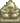

Secret Woods
| Secret Woods | |
 | |
| Closed: | Never |
| Occupants: |  Old Master Cannoli |
The Secret Woods is an outdoor area that can be entered from the northwest corner of Cindersap Forest. The entrance is initially blocked by a large log that can be cleared after upgrading to at least a Steel Axe.
The Secret Woods contain seasonal forageables and Slimes that will attack the player. Slimes here have a chance of dropping Mahogany Seeds when slain.
The Secret Woods contain 6 Large Stumps that regrow daily and can be harvested for a total of 12 Hardwood each day. Four stumps are in the upper part of the woods, and two are found by walking through one of two covered passages to a smaller lower area. One passage is through the trees slightly southeast of the upper set of three stumps, and the other is south of the entrance to the woods, approximately 2-3 tiles to the right of a bush. The former passage is a straight line, but the latter requires the player to walk south, then west, then south again.
Bear's Knowledge
After reading Secret Note #23 the "Strange Note" quest will activate. Entering the Secret Woods with Maple Syrup in inventory between 6am and 7pm with this quest active while its sunny will result in a cutscene where the player encounters a grizzly bear who takes the maple syrup and thanks the player by sharing his special knowledge of berries. As a result, Bear's Knowledge is obtained, which permanently increases the sell price of blackberries and salmonberries by 3x.
Old Master Cannoli
Old Master Cannoli is a statue in the Secret Woods. When interacted with, it will give the description:
| “ | “--Old Master Cannoli--
...Still searching for the sweetest taste...” |
If the statue is given a Sweet Gem Berry, a Stardrop is received in return. This will only occur once. In multiplayer games, only one Sweet Gem Berry is needed for all players to receive a Stardrop.
Lost Items Shop
If a player has unlocked a unique item and then lost it, a secret shop appears overnight behind the fallen column to buy it back. The shop sells items that can't be re-obtained any other way. In multiplayer, any player can purchase an item that was lost (not only the player that lost theirs).
All items are sold for  10,000g.
10,000g.
The items that can appear are:
Foraging

Forageable items found on the ground in the Secret Woods are:[1]
- In Spring:
 Wild Horseradish (52%),
Wild Horseradish (52%),  Morel (32%), and
Morel (32%), and  Common Mushroom (16%)
Common Mushroom (16%) - In Summer:
 Fiddlehead Fern (78%), and
Fiddlehead Fern (78%), and  Red Mushroom (22%)
Red Mushroom (22%) - In Fall: Common Mushroom (46%),
 Chanterelle (38%), and Red Mushroom (15%)
Chanterelle (38%), and Red Mushroom (15%) - In Winter:
 Holly (100%)
Holly (100%)
Forageable items spawn at an average rate of 0.8-1.4 per night, depending upon the season: 0.9 in spring, 1.0 in summer, 0.8 in fall, and 1.4 winter.[2] The map shows the possible locations as red tiles.
Artifact Spots
No Artifacts are possible when digging up Artifact Spots at the Secret Woods. Possible items are:
- 1-3
 Clay (30-60%[3])
Clay (30-60%[3])  Lost Book (20%); once all Lost Books have been found, any potential Lost Book is replaced by
Lost Book (20%); once all Lost Books have been found, any potential Lost Book is replaced by  Mixed Seeds.
Mixed Seeds.- Only in Winter:
 Winter Root (24%)
Winter Root (24%) - Only in Winter:
 Snow Yam (16%)
Snow Yam (16%) - 1-3
 Stone (10-20%[3])
Stone (10-20%[3]) - Only in Spring: 2-5
 Rice Shoots (5%)
Rice Shoots (5%) - An unseen
 Secret Note: up to 5% chance, only if the player has a Magnifying Glass.
Secret Note: up to 5% chance, only if the player has a Magnifying Glass.
Most of the year, there are only 8 tiles (near the pond) where artifact spots are possible, making them very rare, with an average rate of 0.01 per night. In winter the average rate increases to 0.7 per night.[4]
Villager Paths
No villagers walk through the Secret Woods, so items can be safely placed in any location.
Fishing

Fishing is possible in the pond in the southwest area. A unique fish, the Woodskip, can be caught here. Carp and Catfish are also possible. The available fish are the same year-round, even though Catfish is normally unavailable during summer.
| Time | |||||||||||||||||||||
|---|---|---|---|---|---|---|---|---|---|---|---|---|---|---|---|---|---|---|---|---|---|
| 6 | 7 | 8 | 9 | 10 | 11 | 12 | 1 | 2 | 3 | 4 | 5 | 6 | 7 | 8 | 9 | 10 | 11 | 12 | 1 | ||
| Catfish | Rainy day only | ||||||||||||||||||||
In addition to this, the Wall Basket is a unique item that can be obtained from fishing here.
Bugs
- With the addition of the ability to sit on chairs in 1.5, it is possible to enter the Secret Woods without needing the Steel Axe upgrade. Stand directly below the large log that blocks the path. Then place a chair on the other side of it. With the chair in place, it's possible to sit on it, effectively allowing the player to hop over the otherwise impassable obstruction after standing up again. The Secret Woods can be exited again using the same trick, by placing the chair on the forest side of the large log. The player can also use a bench to enter, but cannot exit with one.
References
- ↑ For each forage item, the provided percentage is the average percentage of all forage items that will be the specified item for that season. The input data is Locations.xnb, which is processed by code in GameLocation::spawnObjects.
- ↑ Of the 1920 total tiles in the Secret Woods, 149 (8%) are valid spawn locations for standard forage items. For more information on forage item spawning, see Foraging.
- ↑ 3.0 3.1 The chance of finding extra items in Artifact Spots in season-dependent. The maximum chance is in summer and fall. In winter, the chance is 50% less; in spring it is 6% less. See Artifact Spot for more information.
- ↑ Of the 1920 total tiles in the Secret Woods, 8 (0.4%) are valid spawn locations for artifact spots in spring, summer, and fall. 423 (22%) are valid spawn locations in winter. See Artifact Spot for more information.
History
- 1.4: Blowing leaves in the Secret Woods in Fall are now red/orange instead of green.
- 1.4.4: Fixed a bug where ambient noise would loop incorrectly in the Secret Woods at night.
- 1.5: Any monster in the Secret Woods now has a 10% chance of dropping Mahogany Seeds. Wall Basket can now be obtained from fishing in the pond.
- 1.6.9: Added the lost items shop.
- 1.6.10: Fixed crash when the lost items shop sells Penny's 14-heart event items.
| Locations | |
|---|---|
| Locations | Backwoods • Beach • Bus Stop • Calico Desert • Cindersap Forest • Farm • Farm Cave • Farm Pond • Graveyard • Ginger Island • Mastery Cave • Minecart • Mines • Mountain • Mutant Bug Lair • Pelican Town • Quarry • Quarry Mine • Railroad • Secret Woods • Sewers • Skull Cavern • Summit • Tunnel • Volcano Dungeon • Witch's Swamp |